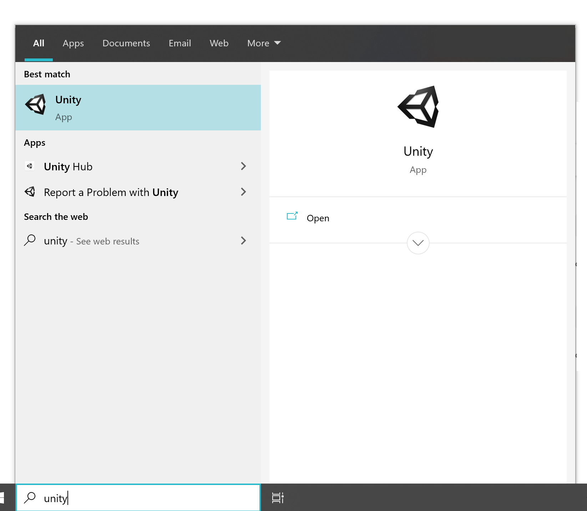

Basics
Unity is a "gaming engine", a piece of software that lets you build and design video games. It's used by professionals in the gaming industry to create some of the most popular games out there. Ever wanted to move and animate your 3Ds Max models? Now you can. With Unity, you can make game worlds like real game developers do. Scroll on to find out how.
Getting started
To open up Unity on the computers in room 127, you can press the windows key and search for the program.
Once you know how to open it up, you can move on to the video tutorials.
Side Note
In this course, you will be using 3Ds Max to make 3D models, Unity to design your games, and a program called VS Code to add simple code to your games to make them work. The tutorial will explain more, but in it they use Visual Studio rather than VS Code.